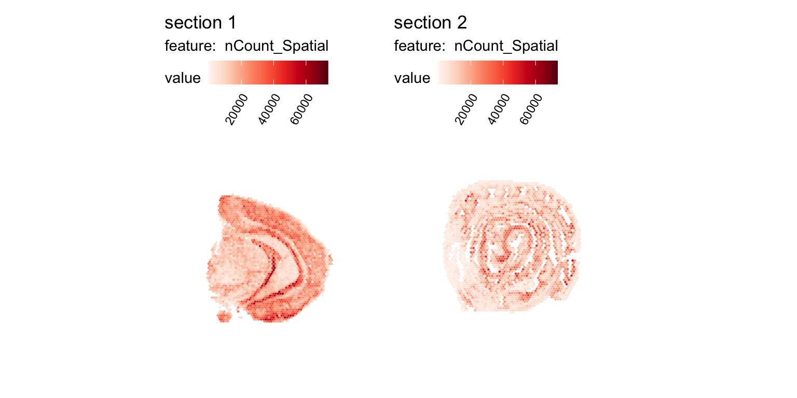
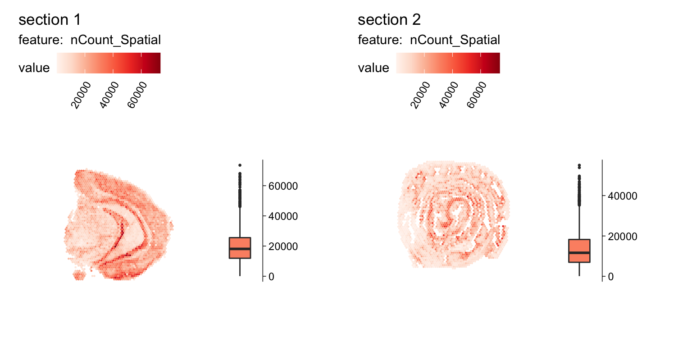
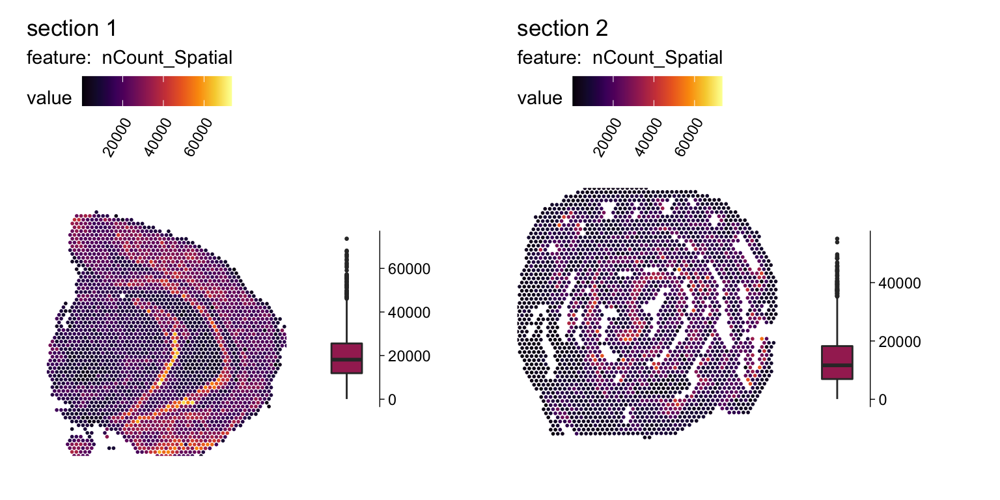
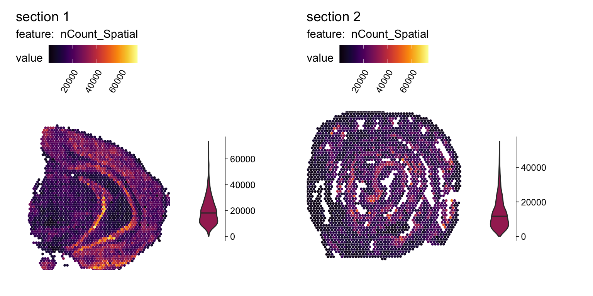
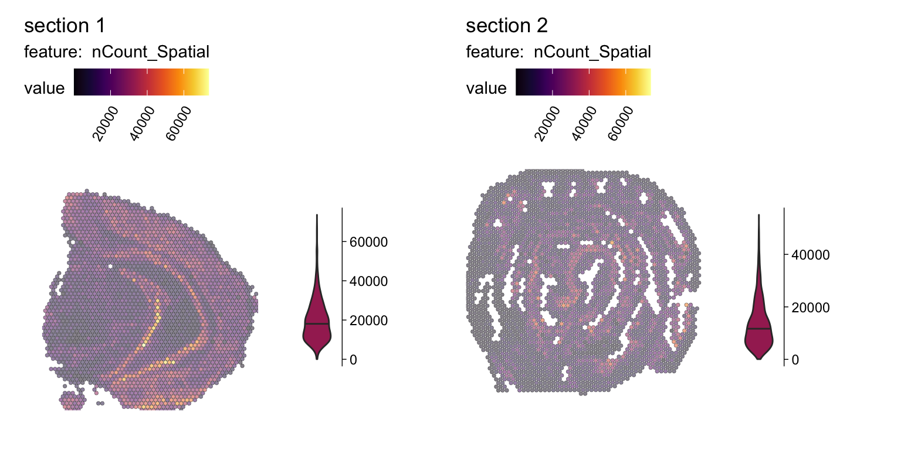
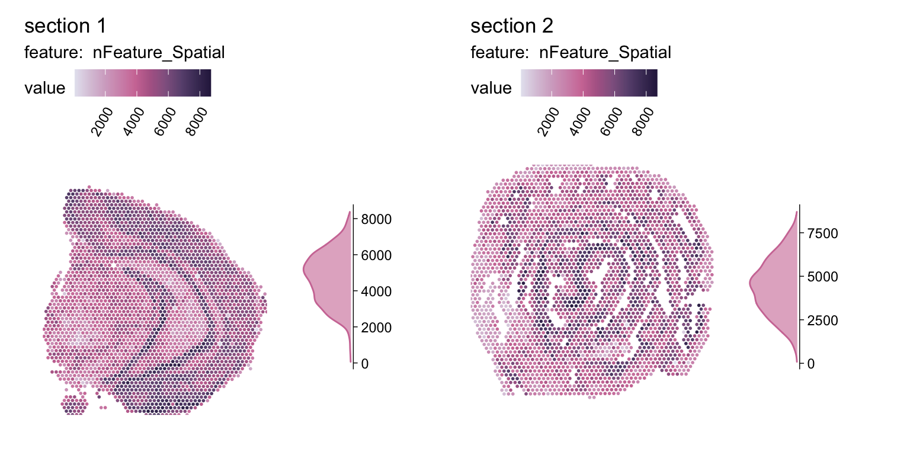
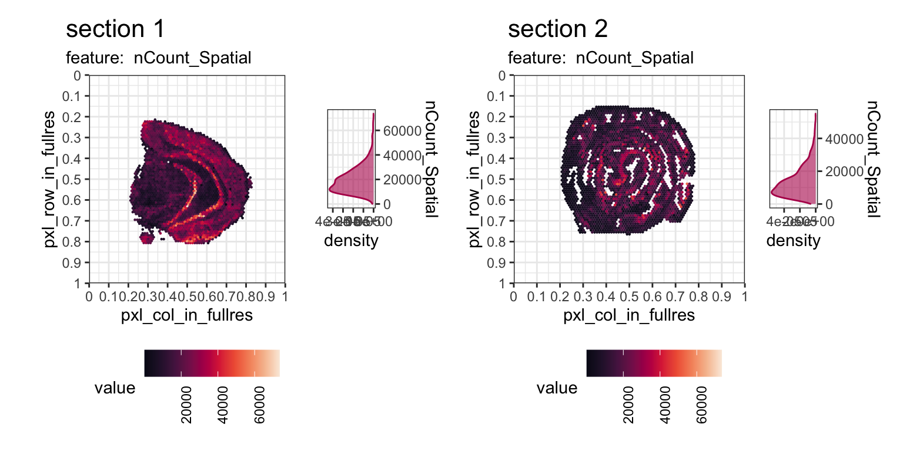
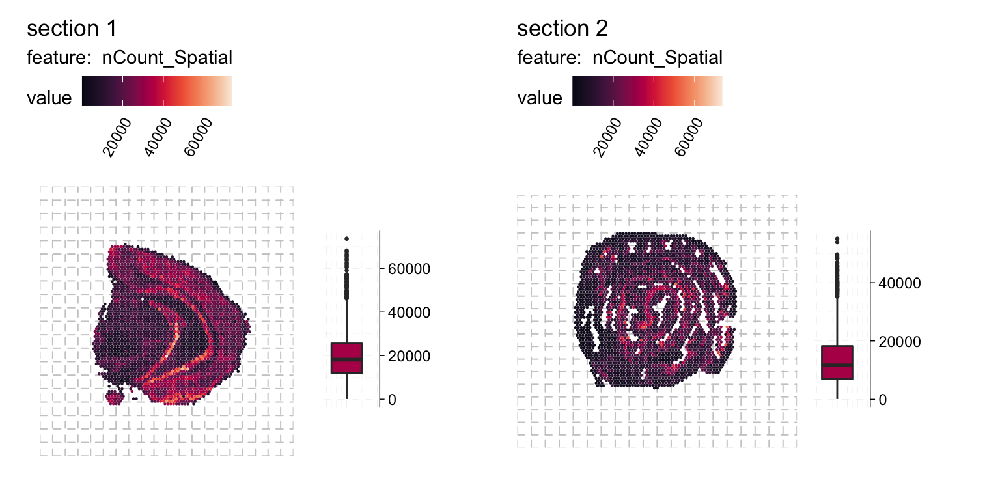
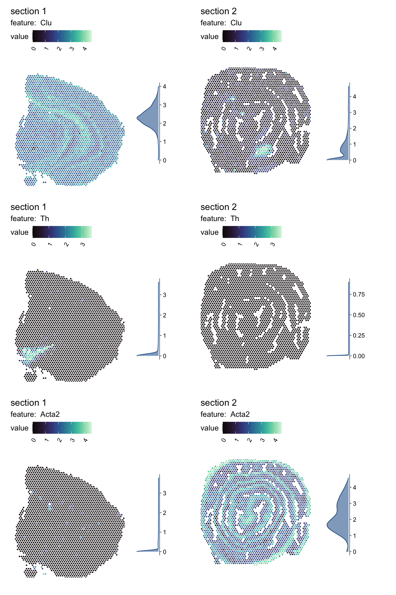

TEST – Adding stat summay plot to MapFeatures with STUtility2
Introduction
This is a test notebook with code for a function to add an additional plot with summary statistics to the MapFeatures() output. The idea is that you should be able to use more or less the same argument inputs as for MapFeatures(), but with a few added arguments to specify what kind of additional plot you want to add.
The summary stat plots included at the moment are:
Boxplot
Violin
Histogram
Density plot
TODO
In this initial test function it is only possible to plot a single numerical feature. I haven’t looked into how to solve that at them moment…
How to best inherit argument options from MapFeatures()
Currently only tested on Seurat object. Need to add the .Default function as well
Make sure it’s not printing "Description:df [2 × 4]" when running p <- MapFeaturesSummay(…)
Other things to consider?
Are we happy with the placement of the summary plot? I personally prefer the plot on the right side and with only an axis on the right side (outlines the whole plot area a bit more nicely)
Should we add the option of placing the plot on the bottom? Will make the code a lot more messy. (Or is there some simple way to rotate the entire plot (not coord_flip or scale_y_reverse)?)
For the histogram and density plot maybe you’d like to have the y-axis though? But that will make it look more messy and not as sleek
Maybe the margins of the summary plot needs to be adjusted though to make it fit as close to the spatial plot as possible and also make enough space on the right-hand side to make sure it doesn’t look like it belongs to the next panel of plots.
library(STUtility2)
Loading required package: Seurat
Attaching SeuratObject
Loading required package: ggplot2
Loading required package: rlang
STUtility2 v0.1.0
If you use STUtility2 in published research, please cite the following
paper:
L. Larsson, L. Franzen, 'Placeholder for title'
Warning in sparseMatrix(i = indices[] + 1, p = indptr[], x = as.numeric(x =
counts[]), : 'giveCsparse' has been deprecated; setting 'repr = "T"' for you
✔ Finished loading expression matrix 1
Warning in sparseMatrix(i = indices[] + 1, p = indptr[], x = as.numeric(x =
counts[]), : 'giveCsparse' has been deprecated; setting 'repr = "T"' for you
✔ Finished loading expression matrix 2
ℹ Merging matrices:
✔ There are 31053 features and 5164 spots in the merged matrix.
ℹ Loading coordinates:
✔ Finished loading coordinates for sample 1
✔ Finished loading coordinates for sample 2
✔ Collected coordinates for 5164 spots.
── Creating `Seurat` object
✔ Expression matrices and coordinates are compatible
→ Created `Seurat` object
→ Created `Staffli` object
→ Loaded spatial data into the `Seurat` object
✔ Returning a `Seurat` object with 31053 features and 5164 spots
The MapFeaturesSummary function
MapFeaturesSummary <-function( object, features,pt_size =1,colors =NULL,fill_color =NULL, stat_type, # "box", "violin", "histogram", "densityncol =2, ... ) {# TODO: How to deal with multiple features?# TODO: Add grid options (inherit from MapFeatures? No needs to be done separately)# Check color - pick a fill color based on mid scale color colors_scale <- colors %||% RColorBrewer::brewer.pal(8, "Reds") fill_color <- fill_color %||% colors_scale[round(length(colors_scale)/2)]# Get data (code copied from MapFeatures()) data_use <-GetStaffli(object)@meta_data |> dplyr::bind_cols(FetchData(object, vars = features) |>as_tibble())# Split data by sampleID (code copied from MapFeatures()) data <- data_use |> dplyr::group_by(sampleID) |> dplyr::group_split() |>setNames(nm =unique(data_use$sampleID))# Plot MapFeatures p_list <-MapFeatures(..., object,features = features, # Currently only one feature is possible# override_plot_dims = F,pt_size = pt_size,colors = colors_scale,return_plot_list = T # !Important )# Set up base plot p_stat_base <-ggplot() +theme_linedraw() +theme(legend.position ="none",# panel.background = element_rect(fill="grey90"),plot.title =element_text(hjust=0.5),axis.text.x =element_blank(),axis.ticks.x =element_blank(),axis.title =element_blank(),panel.grid =element_blank(),panel.border =element_blank(),axis.line.y.right =element_line(size=0.25),plot.margin =unit(c(0, 40, 0, 0), "pt"))# Add plot typesif (stat_type =="box") { map_feat_stats <-lapply(data, function(x){ p_stat <- p_stat_base +geom_boxplot(data = x, mapping =aes_string(x="1", y=features),outlier.size =0.5,fill = fill_color) +xlim(0.5,1.75) +scale_y_continuous(position ="right") }) } elseif (stat_type =="violin") { map_feat_stats <-lapply(data, function(x){ p_stat <- p_stat_base +geom_violin(data = x, mapping =aes_string(x="1", y=features),fill = fill_color,draw_quantiles =0.5) +xlim(0.25,1.75) +scale_y_continuous(position ="right") }) } elseif (stat_type =="histogram") { map_feat_stats <-lapply(data, function(x){ p_stat <- p_stat_base +geom_histogram(data = x, mapping =aes_string(x = features),bins =50,fill = fill_color) +coord_flip() +scale_y_reverse() +scale_x_continuous(position ="top") }) } elseif (stat_type =="density") { map_feat_stats <-lapply(data, function(x){ p_stat <- p_stat_base +geom_density(data = x, mapping =aes_string(x = features),color = fill_color,fill = fill_color,alpha =0.6) +coord_flip() +scale_y_reverse() +scale_x_continuous(position ="top") }) } else {abort(glue::glue("'stat_type' is invalid. Needs to be one of the options 'box', 'violin', 'histogram' or 'density'.")) #TODO: Make nicer error msg? }# Patchwork plots together p_patch <-lapply(1:length(p_list), function(i){ p <- p_list[[i]][[features]] #& theme(panel.background = element_rect(fill="grey90")) p_stat <- map_feat_stats[[i]] layout <-" AAAAA# AAAAAB AAAAAB AAAAAB AAAAAB AAAAA# " p + p_stat +plot_layout(design = layout) })# Return wrapped plot grid p_out <-wrap_plots(p_patch, ncol = ncol)return(p_out)}
MapFeatures(object = se, features = feat_test, pt_size =0.8)

Boxplot
First plotting with basic color scheme.
MapFeaturesSummary(object = se, features = feat_test,stat_type ="box", pt_size =0.8)

Test with a different color scheme and with
MapFeaturesSummary(object = se, features = feat_test,stat_type ="box", colors = color_scale,override_plot_dims = T)

Violin
Here’s with violins
MapFeaturesSummary(object = se, features = feat_test,stat_type ="violin", colors = color_scale, pt_size =1.2,override_plot_dims = T)

We can also add arguments related to the MapFeatures() function, like pt_alpha.
MapFeaturesSummary(object = se, features = feat_test,stat_type ="violin", colors = color_scale, pt_alpha =0.8,pt_stroke =0.2,override_plot_dims = T)

Histogram
We can also combine multiple plots like wit the original function.
Not sure why it prints a “Description:df [2 × 4]” table when running the
p1 <-MapFeaturesSummary(object = se, features ="nCount_Spatial",stat_type ="histogram", colors = viridis::mako(10),override_plot_dims = T)p2 <-MapFeaturesSummary(object = se, features ="nFeature_Spatial",stat_type ="histogram", colors = viridis::rocket(10),override_plot_dims = T)p1 / p2
Density
Finally, let’s look at the density plot add-on.
MapFeaturesSummary(object = se, features ="nFeature_Spatial",stat_type ="density", colors = scico::scico(10, palette ="acton", direction =-1),override_plot_dims = T)

Other themes & stuff
As with all ggplots and patchworks we can also customize the theme, but it will apply to all objects and kind of reset everything else.
MapFeaturesSummary(object = se, features ="nCount_Spatial",stat_type ="density", colors = viridis::rocket(10),pt_size =0.8) &theme_bw() &theme(plot.title =element_text(size=16), legend.position ="bottom", legend.text =element_text(angle=90, hjust=1),plot.margin =margin(6,6,6,6))

Lets just add a grid
MapFeaturesSummary(object = se, features ="nCount_Spatial",stat_type ="box", colors = viridis::rocket(10),pt_size =0.8) &theme(panel.grid =element_line(colour ="grey80", linetype ="dashed"))

Test a different layout
MapFeaturesSummary(object = se, features ="nCount_Spatial",stat_type ="box", colors = viridis::rocket(10),override_plot_dims = T,ncol =1)
Multiple genes
Even if the function currently doesn’t support multiple featuers, it’s possible to overcome by looping over the genes.
genes_plot <-c("Clu", "Th", "Acta2")p_list <-lapply(genes_plot, function(g){message(g)MapFeaturesSummary(object = se, features = g,stat_type ="density", colors = viridis::mako(10),override_plot_dims = T) })
Clu
Th
Acta2
patchwork::wrap_plots(p_list, ncol =1)

That’s it for now…
Also working on a function for the summary of MapLabels (MapLabelsSummary?).